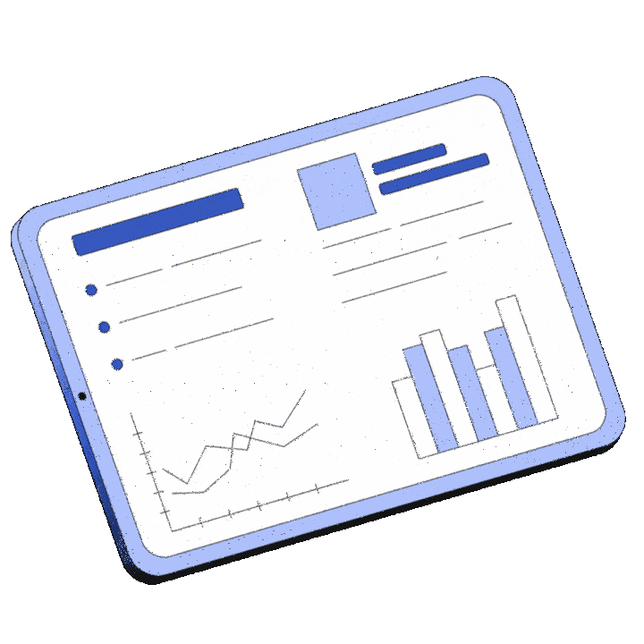
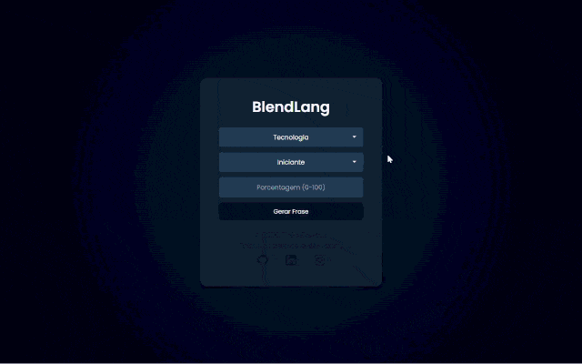
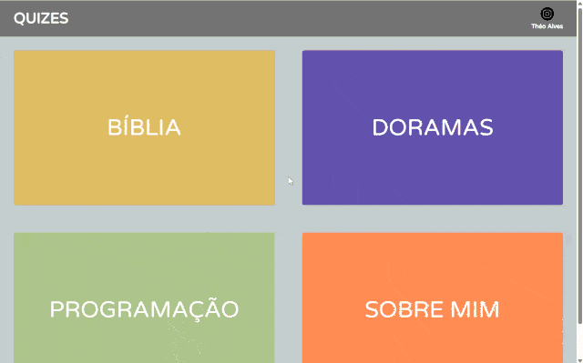
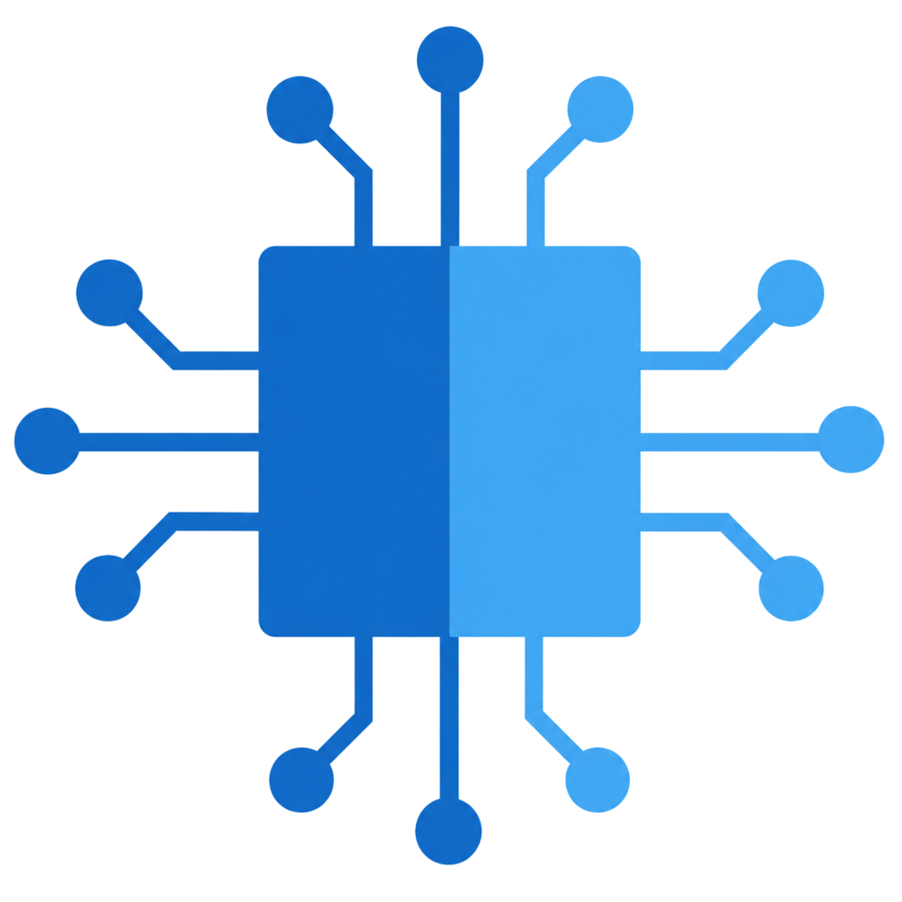
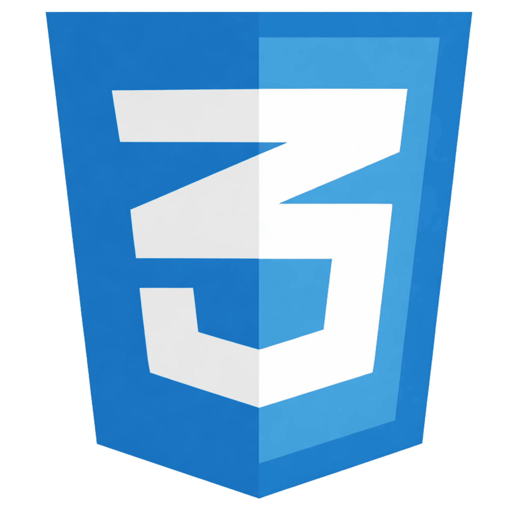

ProTech Health
Página web desenvolvida para apresentar o aplicativo SafeBite.
HTML · CSS · JS

Acredito que a tecnologia atinge seu verdadeiro potencial quando resolve problemas reais e elimina o trabalho mecânico.
Sou graduando em Ciência e Tecnologia na UFABC e atuo com Transformação Digital na Schneider Electric. Meu foco no dia a dia não é apenas utilizar ferramentas, mas entender a raiz de gargalos operacionais e solucioná-los através de automação.
Minha base técnica em Python e SQL se soma à visão corporativa de quem entende que todo processo pode — e deve — ser otimizado. Este portfólio é o registro prático dessa visão.
Página web desenvolvida para apresentar o aplicativo SafeBite.
HTML · CSS · JS
Gerador de frases misturando português e inglês para aprendizado.
Python · Flask · Google Sheets API
Site institucional desenvolvido para consolidar a presença digital da empresa, com foco em apresentar serviços e facilitar a captação de clientes.
HTML · CSS · JS
Trabalho acadêmico: site de quizes interativo por categoria.
HTML · CSS · JS
Desenvolvimento de agentes inteligentes que não apenas respondem a perguntas, mas interpretam contextos operacionais e executam tarefas autônomas.
Ambiente em nuvem da Microsoft utilizado para desenvolver, testar e integrar soluções de inteligência artificial
Linguagem principal para automações, análise de dados e integração com agentes de IA, apoiada por um grande ecossistema de bibliotecas.
Consulta, estruturação e modelagem de dados em bancos relacionais para apoiar análises e processos de decisão.
Visão analítica para mapear gargalos operacionais e desenhar fluxos eficientes antes de aplicar qualquer tecnologia.
Criação de fluxos automatizados (RPA e DPA) no ecossistema Microsoft para conectar aplicativos, sincronizar dados e eliminar o trabalho manual repetitivo.
Estruturação semântica de páginas e aplicações web, garantindo organização clara das informações e acessibilidade.

Estilização avançada e design responsivo para criar interfaces modernas, polidas e adaptáveis a qualquer tela.
Construção de lógicas no front-end para adicionar interatividade, validar dados e consumir APIs de forma dinâmica.
Seja para discutir sobre otimização de processos, explorar o uso prático de IA ou trocar experiências na área de dados, fique à vontade para me mandar uma mensagem. Vamos conversar!